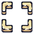

<!DOCTYPE html>
<html>
<head>
<meta charset="UTF-8">
<title>Rqsdqd</title>

<script type='text/javascript' src='data.js'></script>
<script type='text/javascript' src='piece.js'></script>
<script type='text/javascript' src='board.js'></script>
<script type='text/javascript' src='main.js'></script>


</head>
<body>
  <div class='info'>
  <p class='name'></p>
</div>

   <div class="main">


<canvas id="viewport" width="840" height="840"></canvas>

</div>


</body>


</img>
</img>


<style>

@import url('https://fonts.cdnfonts.com/css/fractured-fir');

   .src{
     display: none;
   }
   .info{    Background-image: url(./assets/Carved_9Slides.png);
    z-index: 2;
    position: static;
    visibility: hidden;
    padding: 20px;
    color: black;
    background-size: contain;
    background-repeat: round;
    background-color: black;
    border-radius: 5px;
    font-family: "";
}


   .main{
      display: flex;
      justify-content: center;
      flex-direction: column;
      height: 100vh;
      position: absolute;
   }

   .bg{
      position: absolute;
      width: 840px;
      height: 840px;
      z-index: -1;
   }

   body{
      margin: 0px;
      display: flex;
      justify-content: center;
      background: black;
      overflow: hidden;
   }
   canvas{
     Background-image: url("./assets/bg_.png");
   }
</style>
</body>
</html>
